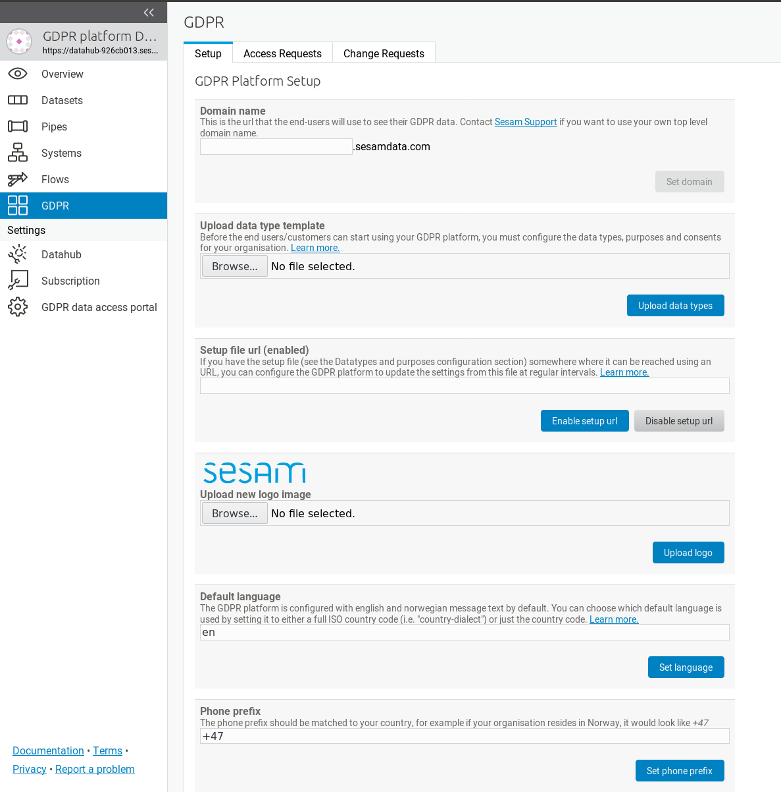
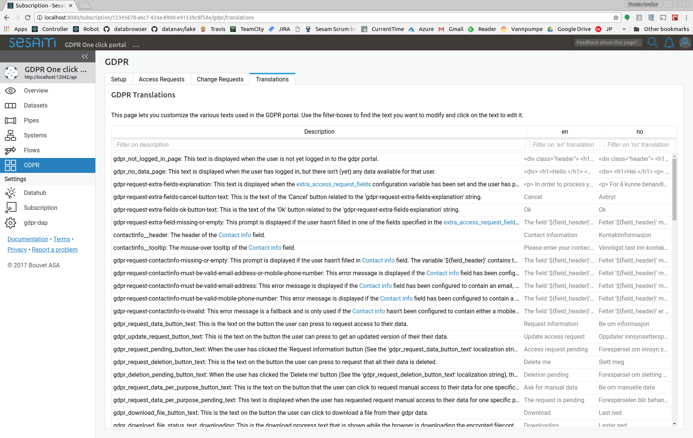
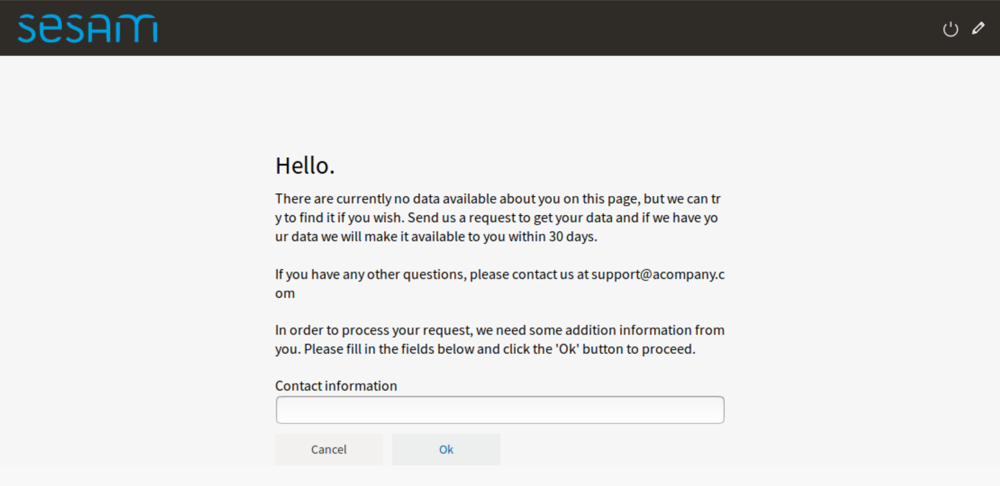
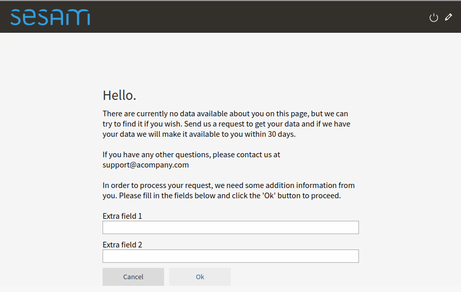

GDPR platform configuration#
Overview#
The GDPR platform consist of three parts; the GDPR platform management interface (management studio), the GDPR platform datahub and the GDPR data access portal.
The management studio interface enables you to edit configuration settings of your GDPR platform and access its datahub where all your GDPR data is collected, connected and stored.
The GDPR data access portal is the public facing interface of the GDPR platform - this is where the end user - data subject in GDPR lingo - can log in and manage their GDPR requests, data and consents.
Logging into the GDPR platform#
You can access the GDPR platform management studio by logging into the Sesam portal and clicking on your GDPR platform subscription.
This will open the management studio GUI for your GDPR platform and datahub. Before you can start using your GDPR platform, there are a couple of configuration elements that you might want to set up first.
Configuring the GDPR platform#
There are some configuration properties that you might want to edit before starting to use the platform:
To do this, navigate to the GDPR platform setup screen:
{kind=link}
This screen should contain a number of configuration properties
Domain name#
The domain name is the internet address (DNS name) where your GDPR data access portal should be available to the users (data
subjects in GDPR lingo). You can choose any name you want, as long as it’s not already in use by someone else.
Your GDPR data access portal will be available on the web as https://selected-domain-name.sesamdata.com
Data type template#
This section allows you to upload a “Data type template” file (an Excel spreadsheet) to the GDPR platform. See the GDPR data types and purposes configuration section for more details.
Setup file URL#
If you have this “Data type template” configuration data file somewhere where it can be reached using an URL (for example as a shared file in Dropbox, Google Drive, One Drive or something similar), you can configure the GDPR platform to update the settings from this file at regular intervals. By default this is at midnight UTC.
Setup file Cron expression#
You configure how often the “Setup file URL” should be downloaded and updated by editing a “Cron” expression. In this example, it will be downloaded every day at midnight and automatically update the GDPR platform setup:
0 0 * * *
In this case it will be updated every hour:
0 * * * *
In this case it will be updated every fifteen minutes:
0/15 * * * *
By default, if a setup file has been specified it will be updated at midnight UTC.
If you are unfamiliar with cron expressions, you can read more of how they are formatted in the Cron Expressions document.
GDPR data access portal logo#
You can choose a custom logo image to display on your GDPR data access portal in the “Upload new logo image” setup section. The uploaded file will replace the default (or current) GDPR data access portal logo immediately when saved.
Default language settings#
The GDPR platform is configured with english and norwegian message text by default. You can choose which default language is used by setting it to either a full ISO country code (i.e. “country-dialect”) or just the country code - for example:
no-NB
or
en
If your language is different than the default norwegian and english locale, you can add additional translations by using the translation GUI.
User selectable languages#
By default the GDPR platform doesn’t allow the end users to select their preferred language. To allow this, a list of selectable languages must be added to the configuration of the data access portal, like this:
[i18n]
user_selectable_languages=
- language_code: en
display_name: English
- language_code: no
display_name: Norsk
The default phone prefix#
The default phone prefix should be matched to your country, for example if your organisation resides in Norway, it would look like:
+47
Custom text and translation#
The static texts displayed in the data access portal can be customized on the GDPR translation page:
{kind=link}
Note that for some of the strings, changes will not affect already emitted notifications or data objects - only new ones.
To add support for a new language you first set the default language to the new language. A column for the new language will then appear in the table of localization strings, and you can fill in the strings for the new language.
Authentication providers#
By default, the GDPR data access portal will ask end-users to authenticate themselves by supplying a phonenumber or and email address. A one time password is then sent to the phonenumber/email address, and the user can enter the password to log in.
Sometimes this isn’t the best way of authenticating the end-users. Perhaps you already have a login-system in place that you wish to use, or you wish to authenticate with something other than a phonenumber or email address.
To handle such cases, the databrowser can be configured to authenticate with an OpenID connect authentication provider. OpenID connect is a authentication standard that is widely supported ( for instance by Goodle and Facebook).
To enable openid connect authentication, you first need one or more external authentication services. You must then tell the data access portal to use the authentication service(s). This is done by setting the “authentication_providers” config variable like this:
[authentication]
authentication_providers=
- provider_id: Microsoft
consumer_key: xxxxxxxx-xxxx-xxxx-xxxx-xxxxxxxxxxxx
consumer_secret: xxxxxxxxxxxxxxxxxxxxxxx
openid_configuration_url: https://login.microsoftonline.com/common/.well-known/openid-configuration
user_id_attribute: upn
- provider_id: Google
consumer_key: xxxxxxxxxx-xxxxxxxxxxxxxxxxxxxxxxxxxxxxxxxx.apps.googleusercontent.com
consumer_secret: xxxxxxxxxx-xxxxxxxxxxxxx
openid_configuration_url: https://accounts.google.com/.well-known/openid-configuration
user_id_attribute: email
- provider_id: Auth0
consumer_key: xxxxxxxxxxxxxxxxxxxxxxxxxxxxxxxx
consumer_secret: xxxxxxxxxxxxxxxxxxxxxxxxxxxxxxxxxxxxxxxxxxxxxxxxxxxxxxxxxxxxxxxx
openid_configuration_url: https://my_auth0_application.eu.auth0.com/.well-known/openid-configuration
user_id_attribute: email
allow_unverified_email: false
Each provider-info entry in the authentication_providers list must contain the following attributes:
- provider_id:
A unique id identifying the provider. This parameter is user-selectable and can be set to anything. The only requirement is that each provider_id must be unique.
Example: “keycloak_test”
- consumer_key:
The id the data access portal is registered with at the authentication provider.
- consumer_secret:
The secret the data access portal uses to authenticate itself with the provider.
The provider-info must contain either a “openid_configuration_url” or a “openid_configuration” parameter:
- openid_configuration_url:
An url that returns the provider metadata as specified here: https://openid.net/specs/openid-connect-discovery-1_0.html#ProviderMetadata
Example:
https://myserver.example.com/auth/realms/demo/.well-known/openid-configuration- openid_configuration:
If the provider doesn’t have a openid_configuration_url endpoint, the provider metadata can be supplied directly on the format specified in https://openid.net/specs/openid-connect-discovery-1_0.html#ProviderMetadata. (This is fiddly and not recommended. Use the ‘openid_configuration_url’ parameter whenever possible)
The provider-info can contain the following optional parameters:
- user_id_attribute: The claim in the UserInfoResponse (https://openid.net/specs/openid-connect-core-1_0.html#UserInfoResponse)
to use as the “user_id” value. Defaults to “sub”. Often, the “sub” claim contains a non-human-readable id, so it is usually better to use some other (unique) claim instead. For authentication against google, “email” should be used. For authentication against login.microsoftonline.com, “upn” should be used.
- contactinfo_attribute: The claim in the UserInfoResponse (https://openid.net/specs/openid-connect-core-1_0.html#UserInfoResponse)
to use as the “contactinfo” value in the returned user_info dict. Defaults to “email”.
- allow_unverified_email:
If true, users with unverified email addresses are allowed to log in. Default true. This can be set to false for authentication providers that are based on the user’s email address, and that don’t already verify the user’s email address.
- use_userinfo_endpoint: This can be set to False for providers where the userinfo endpoint isn’t
neccessary or doesn’t work for some reason (which is the case for the preprod environment from bankidnorge.no, for example). In such cases the user_id, etc is extracted from the IDToken (https://openid.net/specs/openid-connect-core-1_0.html#IDToken) instead.
- scope:
The openid scopes to request from the provider. Defaults to “openid profile email”
Configuring an OpenId connect authentication provider service#
- When a user wants to log in to the GDPR portal via an OpenID Connect authenticationservice, the following happens:
The GDPR portal redirects the user’s webbrowser to the authenticationservice’s login-page.
The user logs in (for instance via a norwegian BankID)
The authenticationservice redirect the user’s webbrowser back to the GDPR portal with an authentication-code in the url.
Most authenticationservices has a list of urls that can be used in step (3). For the GDPR portal, the url is on this form:
<Data Access Portal backend url>/login_callback/<provider_id>
Example:
https://gdpr-dap-f65275bf.sesam.cloud/login_callback/BankID
The “provider_id” is the id you specified in the “authentication_providers” configuration option.
You can find the “Data Access Portal backend url” on the “Network”-tab on the “GDPR access portal” page:

In addition, some authenticationservices has a list of urls that it is allowed to redirect back to after the user has logged out. For the GDPR portal, this url is on this form:
<Data Access Portal backend url>
Example:
https://gdpr-dap-f65275bf.sesam.cloud
Custom contact info#
In some cases the authentication provider doesn’t provide a phone number or email address that the user can be reached on. This can be the case when the user is authenticated via BankID. Since the GDPR platform needs a way to send notifications to the user, the GDPR data access portal can be configured to require the user to manually enter the contact information when making an data access request.
This is done by setting the “access_request_contactinfo” option on the data access portal, like this:
[gdpr]
access_request_contactinfo=email,mobile_phone
The value of the configuration option is a comma-separated list of the contact information types the user can specify. Possible values are “email” and “mobile_phone”. If more than one type is listed, the user can choose which one to specify.
This will look like this in the end-user GUI:
{kind=link}
The header-text and the mouse-over tooltip for the contact information field can be customized by tweaking one or more of the following localization strings:
[localization]
en-contactinfo__header=Contact information
en-contactinfo__tooltip=Please enter a mobile phone number or an email address.
no-contactinfo__header=Kontaktinformasjon
no-contactinfo__tooltip=Vennligst tast inn et mobiltelefon nummer eller en epost addresse.
Technical details: When the user enters a phone number, it is validated using the regular expression in the “otp_valid_mobile_phone_number_regexp” config option in the “authentication” section. Email addresses are validated using the “otp_valid_email_address_regexp” config option.
Extra access request fields#
This is the list of extra fields that the user (aka the data subject) must fill in when making a gdpr access request. By default this list is empty, but in some cases it can be desirable to have the user add additional information. Example usecase: the user authenticate via a phonenumber, but has to also specify their date of birth when making an access request. This enables the data controller to double-check that the phonenumber is correct.
Each field id must be some unique subject identifier. The field id will used to look up the field’s “header” and “tooltip” texts in the [localization] section.
Example configuration:
[gdpr]
extra_access_request_fields=
namespace1:field1
namespace1:field2
[localization]
no-namespace1:field1__header=Ekstra felt 1
no-namespace1:field1__tooltip=Dette er ekstra felt 1
en-namespace1:field1__header=Extra field 1
en-namespace1:field1__tooltip=This is extra field 1
no-namespace1:field2__header=Ekstra felt 2
no-namespace1:field2__tooltip=Dette er ekstra felt 2
en-namespace1:field2__header=Extra field 2
en-namespace1:field2__tooltip=This is extra field 2
This will look like this in the end-user GUI:
{kind=link}